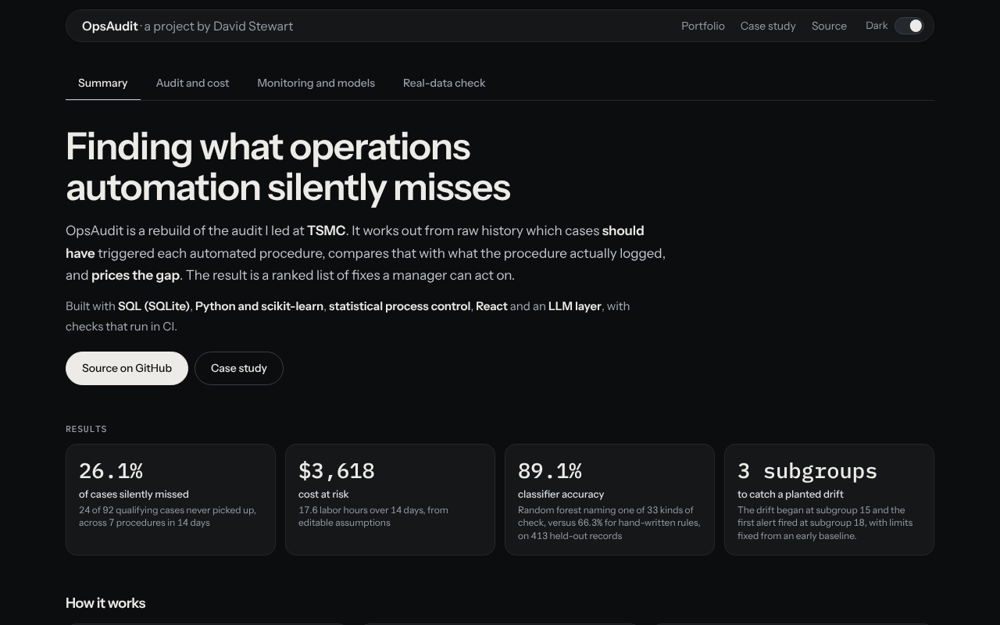
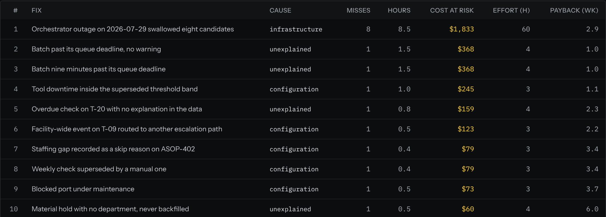
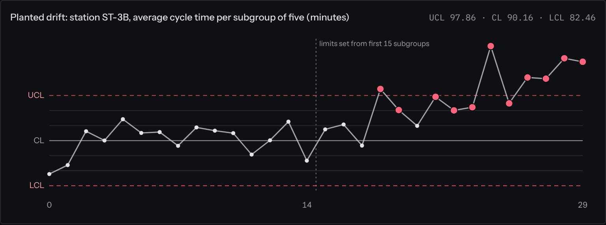
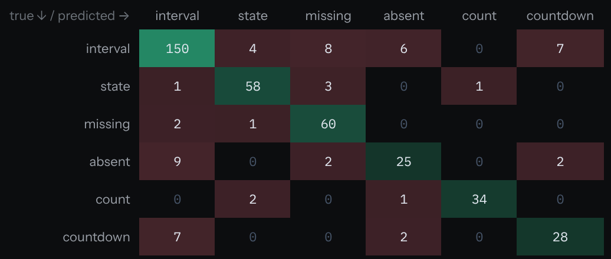

OpsAudit live demo
Finding what operations automation silently misses, and putting a price on it. JavaScript, React, SQLite, Python, scikit-learn.
Summary
A rebuild of the audit I led at TSMC. It reconstructs from raw history which cases should have triggered each automated procedure, compares that with what the procedure logged, and prices the gap into a ranked list of fixes.
- 24 of 92 qualifying cases silently missed (26.1%), sized at 17.6 labor hours and $3,618 at risk over 14 days.
- A random forest classifier named which of 33 kinds of check a messy procedure definition describes with 89.1% accuracy, against 66.3% for hand-written rules.
- Statistical process control flagged a planted drift three subgroups after it began.
SQL, Python, scikit-learn, statistical process control, React, LLM evaluation.

The problem
Automated procedures watch for a condition, such as a port blocked for 30 minutes, and act on it. They run on live events with no historical replay. If the platform is down, an event arrives late, or a rule is slightly too narrow, the case is never picked up and nothing records that it was missed.
Success metrics are calculated over the cases that were handled, so a procedure can report 100% while missing a quarter of what it should have caught.
Who it is for
- Operations and program managers who own automated procedures and need to know what those procedures are not catching, what it costs, and which fix to do first.
- Automation and process engineers who write the detection logic and maintain it as documents drift.
Three decisions that shaped it
I rebuilt what should have happened from raw history.
A procedure's success rate only counts the cases it handled, so it can never show a case it never saw. I rebuilt what each procedure should have picked up from the raw events and compared that with what it logged. The cost is that the audit needs two independent sources, and in practice the hard part is getting access to the automation's own log.
I made the comparison hard to cheat, including against myself.
I wrote the answer keys by hand and froze the baseline rules before training any model, then scored the test set once. The checks are tested too: the audit fails if a procedure returns zero misses, because a query that finds nothing looks the same as one that is broken. The cost is that I wrote the keys, so they share my vocabulary and the results lean optimistic, and the limits below say so.
I priced the misses with assumptions anyone can change.
Managers act on a ranked list of fixes, so each miss becomes labor hours and cost at risk, misses are grouped into fixes, and the fixes are ranked by cost, hours or payback. Every input is an editable assumption, set low on purpose. The dollar figures are illustrative and the annualized number just scales a 14-day window, so it should not be read as a forecast.
Results
- 26.1% miss rate: 24 of 92 qualifying cases
- 89% vs 66% accuracy: random forest vs hand-written rules, on 413 held-out records
- 33 specific check types classified
Audit. 92 qualifying cases, 68 logged, 24 missed. Grouped into fixes and ranked by cost at risk, the largest fix, an outage backfill, covers 8 of the 24 misses.

Statistical process control. A drift planted in one of two parallel process lanes alarmed three subgroups after it started. The chart on the difference between the lanes, shown below, flagged it at subgroup 22. A single-subgroup spike produced exactly one alert.

Classifier. Each procedure definition is messy text, and the classifier has to name what it watches. There are 33 specific check types, such as queue time, time since maintenance, an out-of-control alert left open, a test result with no decision, a hold with no owner, and repeated autoload failures. On the 413-record test set, the random forest named the specific check 89.1% of the time. Hand-written rules with multilingual keywords scored 66.3%, and always guessing the most common class scored 2.9%.

Real data, and a weak result. I stress-tested the same ideas on UCI SECOM, a public semiconductor dataset of 1,567 production runs. The control charts as built did not separate failures from passes (95.0% of failing runs were flagged, but so were 98.8% of passing runs), and no classifier clearly beat chance on the later runs.
AI layers. One run each. The right procedure resolved 5 of 5 times, but only 2 of 5 generated queries matched the baseline exactly. Root-cause grouping passed 3 of 5 checks and recovered the outage cluster exactly.
Limits: this is a demo of the kind of work I did at TSMC, and all data on this page is synthetic except the clearly labeled public-data check. Other limits: a small sample (24 misses, one 14-day window), answer keys I wrote myself, and one run of each AI layer. The numbers show how the method behaves on small samples and should not be read as a benchmark or a forecast.
What I would do next
- Run it on a real pair of sources, the raw events plus the automation's own log, since that access is the real bottleneck.
- Replace my hand-written answer keys with keys written by someone who owns the procedures.
- Repeat the AI runs enough times to report a spread, instead of one sample each.
- Extend the same audit to other domains that have the same two-source structure, such as inventory reorders, shipment exceptions and ticket escalations.